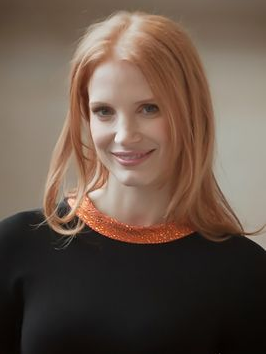

您的浏览器 不支持impress.js所需的功能 , 所以提供了一个简化的版本演示.
请使用最新版本的以下浏览器： Chrome, Safari 或 Firefox .
A Question
Do you ever consider about the universe?
Or
Do you think what the universe looks like?
Interstellar is a 2014 epic science fiction film directed by
Christopher Nolan and starring
Matthew
McConaughey ,
Anne Hathaway,
Jessica Chastain, and
Michael Caine. The film
features
a
crew of astronauts who travel through a wormhole in search of a new home for humanity.
——Wikipedia
Christopher Nolan

Matthew McConaughey

Anne Hathaway

Jessica Chastain

Michael Caine

Storyline
In the near future, Earth has been devastated by drought and famine, causing a scarcity
in food and extreme
changes in climate. When humanity is facing extinction, a mysterious rip in the space-time continuum is
discovered, giving mankind the opportunity to widen its lifespan. A group of explorers must travel
beyond
our solar system in search of a planet that can sustain life. The crew of the Endurance are required
to
think bigger and go further than any human in history as they embark on an interstellar voyage into
the
unknown. Coop, the pilot of the Endurance, must decide between seeing his children again and the future of
the human race.
About Scientific Accuracy
Theoretical physicist Kip Thorne was a scientific consultant for the film to ensure the depictions of
wormholes
and relativity were as accurate as possible. "For the depictions of the wormholes and the black hole," he
said,
"we discussed how to go about it, and then I worked on the equations that would enable tracing of light rays
as
they traveled through a wormhole or around a black hole—so what you see is based on Einstein's general
relativity equations."
About Music
The sound environment is just mesmerizing.It is a very important part of the movie, because some
scenes take place in space, and Noland just found the right way to use sound. The soundtrack is
breathtaking, epic, amazing, unreal. I could find a lot more adjectives to qualify
it, but you have to hear it to understand how epic they are.
love is the one thing that transcends time and space
Love isn’t something that we invented. It’s observable. Powerful. It has to mean something. Maybe it means
something more, something we can’t yet understand. Maybe it’s some evidence, some artifact of a higher dimension
that we can’t consciously perceive. Love is the one thing that we’re capable of perceiving that transcends
dimensions of time and space. Maybe we should trust that, even if we can’t understand it.
Thanks for the EVERYONE!